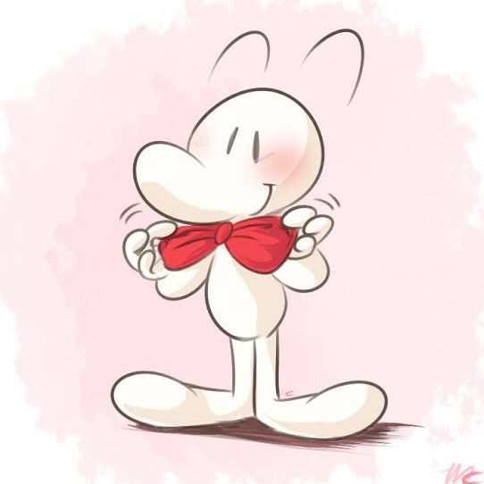

A little corner
of my internet.
Gaming, little moments, and things worth keeping.
a place for all the things I love ♡
make yourself at home
Watch
Gaming, vlogs, and the wonderfully random in-between.
Collect
A photo archive for the moments you want to hold onto.
Create
Personal projects, little experiments, and things taking shape.
The scrapbook starts here.
The journal is ready for its first entry. Until then, wander through the projects or say hello.
A creator, many little worlds.
Meet the person connecting gaming, photography, and everyday creativity.
A little about Teicheir →